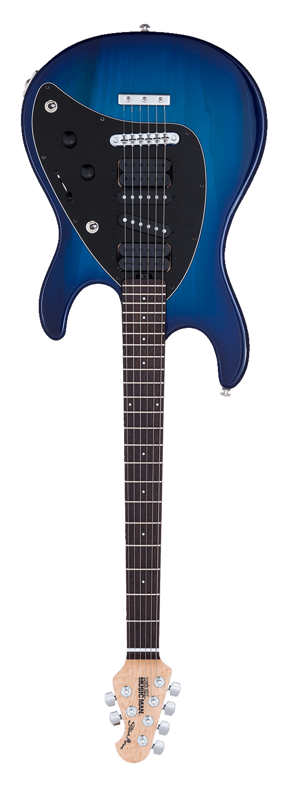
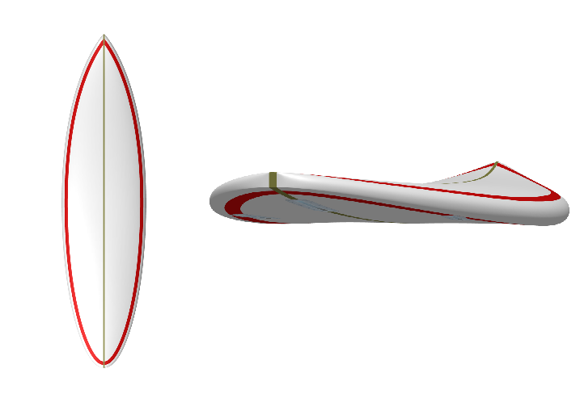

 Nathan was born and raised in Perth. Coming from a musically inclined family, he was exposed to music from a young age, he took up classical guitar at age 9 and continued through to his teens where he switched to electric. Guitar has remained a significant aspect of his life to this present day with influences ranging from Billy Gibbons, Stevie Ray Vaughn, Eddie Van Halen, Jimi Hendrix, Jimi Page, Angus Young, Steve Morse, RHCP, James Brown, BB king, Albert Collins, Thin Lizzy and Jamiroquai. He plays Ernie Ball Music Man guitars and EB Slinky strings and will jump at the opportunity to jam funk, fusion, blues or hard rock.
Academically, Nathan was inclined to the arts as well as maths and physics at school, eventually studying Electronic Engineering at UWA graduating in 1992. After doing 3 months in Bunbury working with Worsely Alumina for his final year work experience, he decided that the only way he was going to work as an engineer was to either go to the Eastern states or North to Asia. Air tickets were cheaper to Singapore than Sydney and he had contacts from his honours group, so he sold up and headed to Asia.
By © Mateusz War. ;/ ;Wikimedia Commons, CC BY-SA 3.0, Link Finding work in Singapore led him to work for Singapore Telecom, then AT&T as a Cellular Radio Engineer and his career in Telecommunications was born. He stayed with AT&T for 7 years working much of that time travelling to various countries in Sout East Asia as wel as the US. He left AT&T in 2002 to start free-lance consulting where he would do 3 to 6 month contracts for vendors or operators of cellular telephony services and equipment. His primary remit was to plan, deploy and optimise the performance of 2G/3G/4G radio networks. He contracted to Ericsson, Nokia and Huawei in the vendor side and MTN, Optus, True, China Unicom and Tmobile in the operator space.
During his contracting years, his R&R base was West Java, were he could take advantage of the big city (Jakarta) and the tropical beach and surf (Cimaja and Ujung Genteng). Having spent so much time in this area, it ramains close to his heart and he returns there whenever he gets the opportunity.
After contracting for over 15 years, he finally called it quits when his wife of 10 years finally gave birth to their first child in 2017. At that point, they decided to return to Australia. The job market for Cellular Radio Engineers in Australia has never been very good and being on the wrong side of 45 at the time as well as the telco industry going through a period of massive change and layoffs, it became clear that a career change was in order. Nathan still had the technical skills as well as over 20 years of solid engineering experience to offer, he just needed a target job market to apply it to.
Analysing his skillset, talents and experience as well as looking at what he had done during his previous work, it boiled down to data and stats. Nathan was always good with data and statistics. Manipulating data, parsing data, transforming data, creating models from real world noisy data. Planning radio networks involed Radio propagation model tuning which is classic apllied log-linear regression. Nathan was good at it, better than most, he had a knack for what is known in the industry as "a black art". Tuning radio propagation models involves theory and statistics along with gut feeling and experience. Deploying radio networks involves a lot of time/project/process management, databases and tracking systems, also lots of troubleshooting. Managing performance of Radio Networks involves managing vast data sources and pulling out insights from them, alot of time series analysis, comparative analysis and statistics as well as kpi development and ranking. So, it was clear, a career pivot to data science made the most sense. Nathan is a natural at data science and he has the experience to back it up.
He thus chose to return to UWA to take up a masters of data science. The main logic here is that it suits his skillset and talents. As well, the wide array of industries that require data scientists would surely increase the odds of finding employment. During the course it became clear that his skills were good. Acheiving HDs for all units with minimal problems and doing so while dealing the with the parallel stressors of toddelr in the midst of the terrible twos and a wife having a second child. He currently is completing his masters in June 2020 if the corona virus doesn't mess up his plans.
Nathan plans to work in the Data Science industry in some capacity, it remains unclear how easy this challenge will be considering that despite getting all HD grades and having extensive relevant data science experience, he is approaching age 50. While still healthy and fit, the age factor brings with it significant age related discrimination in Australia. How this balancing act plays out (skills, experience vs age descrimination) is yet to be written, but Nathan is not afraid to head offshore for work if that is required and it very well may be.
Music and guitar still plays a significant part in Nathan's life, he still practices when he can there is never something that can not be improved or learnt.
A new avenue of interest that has developed in the last 5 years is surfboard design, after surfing for over 20 years, Nathan has developed significant knowledge and skills relating to surfboard design having designed 10 boards so far and manufactured them in Indonesia. The quality of his shapes is now at a point that he far prefers the feel and performance of his own boards over anything that he can buy in a store or get from a custom shaper. All this and he can design and manufacture surfboards for 50% the cost of a commercial board 